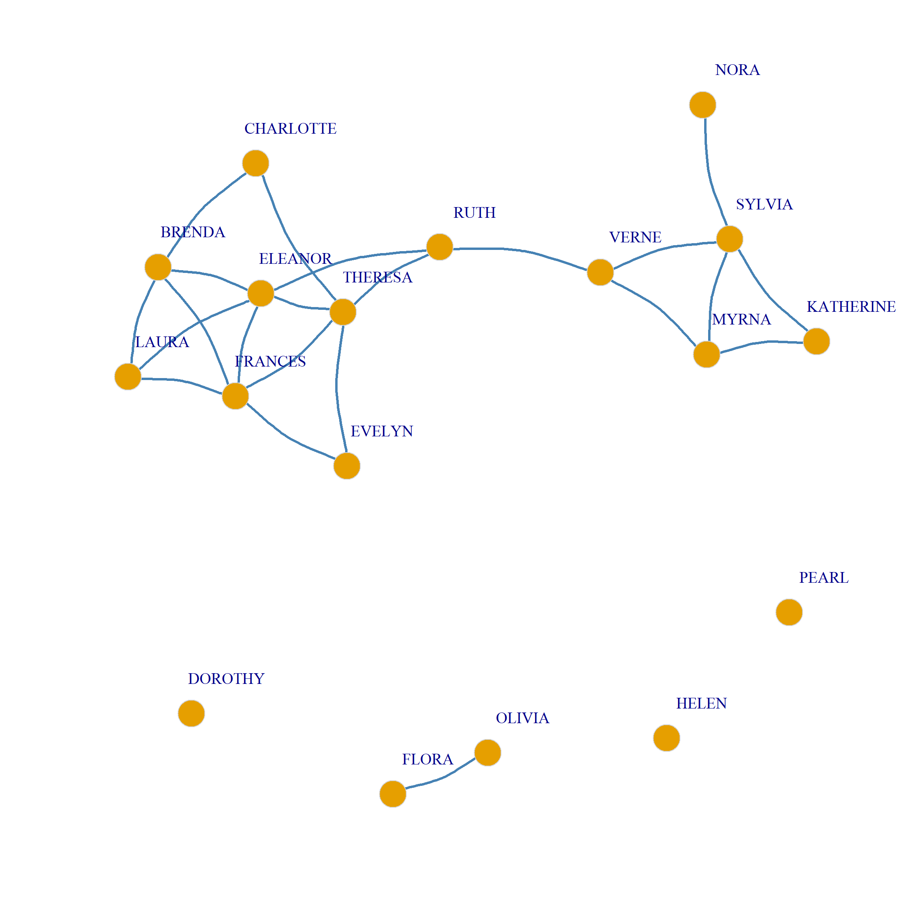
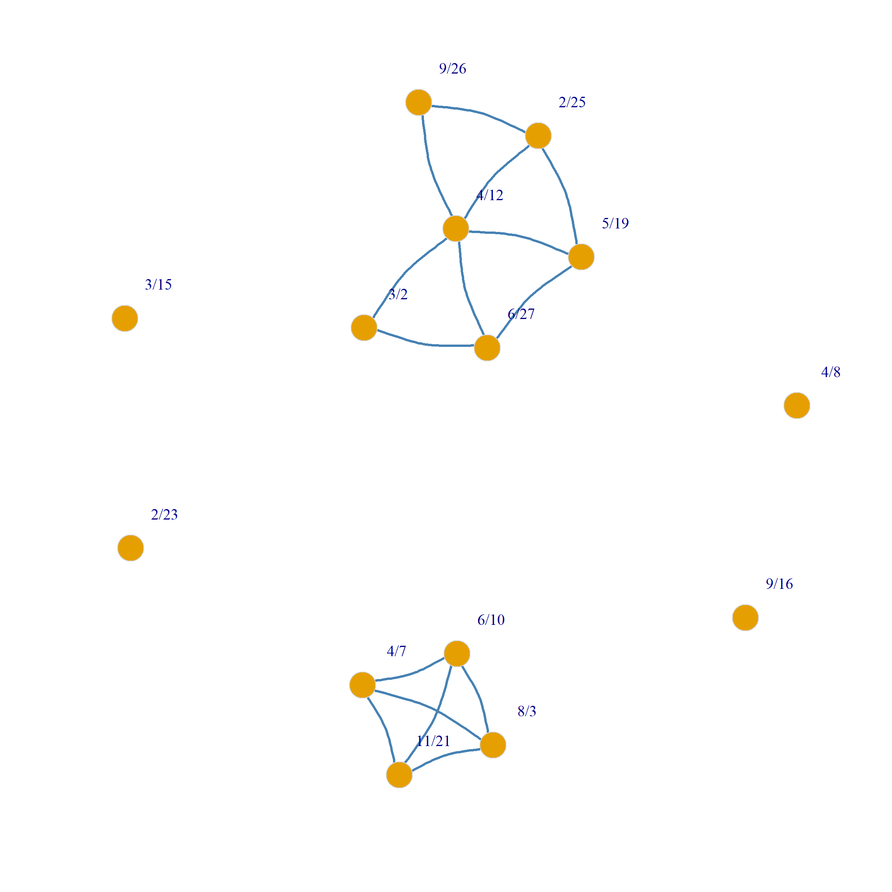

Extracting the Backbone of Bipartite Projections Using Two-Mode Graph Ensembles
1 The Problem with Bipartite Projections
Recall from our lecture on the duality of persons and groups that a common approach to analyzing two-mode networks is via what Everett and Borgatti (2013) call the “dual projection” approach. This involves computing the row and column object projections from the original affiliation matrix (Breiger 1974). Nevertheless, one issue with this approach is that the result is a weighted network, which can be hard to analyze using our usual tools.
Moreover, because just sharing a single membership (member) will create a connection between any two persons (groups) in the row (column) projection, the resulting weighted graphs are dense and therefore lack meaningful or interesting structure. Thus, a common task is to try to prune and binarize bipartite projections. Zak Neal (2014) refers to this problem as extracting the backbone of the bipartite projection.
So let’s load up our trusty Southern Women data set and compute the bipartite projections:
Recall that \(\mathbf{A}\) is the rectangular affiliation matrix recording adjacency relations between persons and groups, \(\mathbf{P}\) is the weighted row projection between people, where the weight between pairs of people is the number of common memberships they share, and \(\mathbf{G}\) is the weighted column projection between groups, where the weight between pairs of groups is the number of common members they share.
The \(\mathbf{P}\) matrix looks like this:
EVELYN LAURA THERESA BRENDA CHARLOTTE FRANCES ELEANOR PEARL RUTH
EVELYN 0 6 7 6 3 4 3 3 3
LAURA 6 0 6 6 3 4 4 2 3
THERESA 7 6 0 6 4 4 4 3 4
BRENDA 6 6 6 0 4 4 4 2 3
CHARLOTTE 3 3 4 4 0 2 2 0 2
FRANCES 4 4 4 4 2 0 3 2 2
ELEANOR 3 4 4 4 2 3 0 2 3
PEARL 3 2 3 2 0 2 2 0 2
RUTH 3 3 4 3 2 2 3 2 0
VERNE 2 2 3 2 1 1 2 2 3
MYRNA 2 1 2 1 0 1 1 2 2
KATHERINE 2 1 2 1 0 1 1 2 2
SYLVIA 2 2 3 2 1 1 2 2 3
NORA 2 2 3 2 1 1 2 2 2
HELEN 1 2 2 2 1 1 2 1 2
DOROTHY 2 1 2 1 0 1 1 2 2
OLIVIA 1 0 1 0 0 0 0 1 1
FLORA 1 0 1 0 0 0 0 1 1
VERNE MYRNA KATHERINE SYLVIA NORA HELEN DOROTHY OLIVIA FLORA
EVELYN 2 2 2 2 2 1 2 1 1
LAURA 2 1 1 2 2 2 1 0 0
THERESA 3 2 2 3 3 2 2 1 1
BRENDA 2 1 1 2 2 2 1 0 0
CHARLOTTE 1 0 0 1 1 1 0 0 0
FRANCES 1 1 1 1 1 1 1 0 0
ELEANOR 2 1 1 2 2 2 1 0 0
PEARL 2 2 2 2 2 1 2 1 1
RUTH 3 2 2 3 2 2 2 1 1
VERNE 0 3 3 4 3 3 2 1 1
MYRNA 3 0 4 4 3 3 2 1 1
KATHERINE 3 4 0 6 5 3 2 1 1
SYLVIA 4 4 6 0 6 4 2 1 1
NORA 3 3 5 6 0 4 1 2 2
HELEN 3 3 3 4 4 0 1 1 1
DOROTHY 2 2 2 2 1 1 0 1 1
OLIVIA 1 1 1 1 2 1 1 0 2
FLORA 1 1 1 1 2 1 1 2 0And the \(\mathbf{G}\) matrix looks like this:
6/27 3/2 4/12 9/26 2/25 5/19 3/15 9/16 4/8 6/10 2/23 4/7 11/21 8/3
6/27 0 2 3 2 3 3 2 3 1 0 0 0 0 0
3/2 2 0 3 2 3 3 2 3 2 0 0 0 0 0
4/12 3 3 0 4 6 5 4 5 2 0 0 0 0 0
9/26 2 2 4 0 4 3 3 3 2 0 0 0 0 0
2/25 3 3 6 4 0 6 6 7 3 0 0 0 0 0
5/19 3 3 5 3 6 0 5 7 4 1 1 1 1 1
3/15 2 2 4 3 6 5 0 8 5 3 2 4 2 2
9/16 3 3 5 3 7 7 8 0 9 4 1 5 2 2
4/8 1 2 2 2 3 4 5 9 0 4 3 5 3 3
6/10 0 0 0 0 0 1 3 4 4 0 2 5 3 3
2/23 0 0 0 0 0 1 2 1 3 2 0 2 1 1
4/7 0 0 0 0 0 1 4 5 5 5 2 0 3 3
11/21 0 0 0 0 0 1 2 2 3 3 1 3 0 3
8/3 0 0 0 0 0 1 2 2 3 3 1 3 3 0Now, our job is to binarize these matrices by retaining adjacency relations between nodes whose weights is significantly larger than we would expect given a suitable null model. This is a situation perfectly tailored for two-mode graph ensembles!
2 The Stochastic Degree Sequence Model (Logit version)
Neal (2014) proposes one such approach called the Stochastic Degree Sequence Model (SDSM). This approach compares the observed weights in each bipartite projection against those from a bipartite graph ensemble where the graphs in the ensemble are generated from a model that preserves the expected (average) degrees of the nodes in the two-mode network.
We proceed as follows. To begin, we estimate a generalized linear model for binary outcomes (e.g., logit or probit, or your favorite other), where we predict the probability of observing an edge in the bipartite graph from the degrees of each node incident to each edge (and their statistical interaction). In R we can do this in three steps:
First, we create a dataset with the affiliation matrix as a response variable and the degrees of each node as covariates:
Code
y d1 d2
1 1 8 3
2 1 7 3
3 0 8 3
4 1 7 3
5 0 4 3
6 0 4 3
7 0 4 3
8 0 3 3
9 0 4 3
10 0 4 3
11 0 4 3
12 0 6 3
13 0 7 3
14 0 8 3
15 0 5 3
16 0 2 3
17 0 2 3
18 0 2 3
19 1 8 3
20 1 7 3
21 1 8 3
22 0 7 3
23 0 4 3
24 0 4 3
25 0 4 3Second, we estimate a logit regression with the degrees as predictors:
Call:
glm(formula = y ~ d1 + d2, family = "binomial", data = dat)
Coefficients:
Estimate Std. Error z value Pr(>|z|)
(Intercept) -4.64673 0.62672 -7.414 1.22e-13 ***
d1 0.40645 0.07980 5.093 3.52e-07 ***
d2 0.29307 0.04788 6.121 9.29e-10 ***
---
Signif. codes: 0 '***' 0.001 '**' 0.01 '*' 0.05 '.' 0.1 ' ' 1
(Dispersion parameter for binomial family taken to be 1)
Null deviance: 327.29 on 251 degrees of freedom
Residual deviance: 256.60 on 249 degrees of freedom
AIC: 262.6
Number of Fisher Scoring iterations: 4Third, we compute the predicted probabilities for each case:
1 2 3 4 5 6 7 8 9 10 11 12 13 14 15 16
0.37 0.28 0.37 0.28 0.11 0.11 0.11 0.07 0.11 0.11 0.11 0.21 0.28 0.37 0.15 0.05
17 18 19 20 21 22 23 24 25
0.05 0.05 0.37 0.28 0.37 0.28 0.11 0.11 0.11 Now, we use these predicted probabilities to generate an ensemble of graphs, where each edge in the graph is a Bernoulli draw from the predicted probability response vector. We can do this using the following function:
The above function uses the runif function in R to compare each predicted probability to a random number between zero and one, and then creates a new affiliation matrix that has a one in each cell if the predicted probability is larger than the corresponding random number.
Let’s see how this works:
Code
6/27 3/2 4/12 9/26 2/25 5/19 3/15 9/16 4/8 6/10 2/23 4/7 11/21 8/3
EVELYN 1 1 0 0 1 1 1 1 1 0 0 1 1 1
LAURA 0 0 1 1 1 0 1 1 1 1 1 0 0 0
THERESA 0 0 1 1 1 1 0 1 1 1 0 1 0 1
BRENDA 0 0 1 0 1 0 1 1 1 0 1 0 0 0
CHARLOTTE 0 0 1 0 0 1 1 1 1 0 0 0 0 0
FRANCES 1 0 0 0 0 1 0 0 0 0 0 0 0 0
ELEANOR 0 0 0 0 0 0 0 1 0 0 0 0 0 0
PEARL 0 0 0 1 1 1 1 0 1 0 0 0 0 0
RUTH 0 0 1 0 1 0 0 1 1 0 0 0 1 0
VERNE 0 0 1 0 0 0 0 1 1 0 0 0 0 0
MYRNA 0 0 0 0 0 0 0 0 1 0 0 1 0 0
KATHERINE 0 1 0 0 0 1 1 1 1 0 0 1 0 0
SYLVIA 0 0 1 0 1 1 1 0 1 0 0 1 0 0
NORA 0 0 0 0 1 0 1 1 1 0 0 1 0 0
HELEN 1 0 1 0 0 0 1 1 1 0 0 1 0 0
DOROTHY 0 0 0 0 0 0 1 1 1 0 0 0 0 0
OLIVIA 0 1 0 0 0 0 0 1 0 0 0 1 0 0
FLORA 1 0 0 0 1 0 0 1 1 0 0 0 0 0Which generates an affiliation matrix realization from the predicted probabilities we calculated before, with the probability of each edge being a function of the degrees of each node in the original affiliation matrix. Now all we need to do is produce a bunch of these using the replicate function in R:
We can then create a bunch of person projections from these matrices using lapply:
And a bunch of group projections:
Now we generate a list of binary projections where two nodes are tied when their observed weight in the row or column projections is larger than the corresponding weight in the generated projections:
We now add all of the matrices in each list to count the number of times the observed value is larger than the expected value. We use the trusty R function Reduce with the "+" operator to do this:
The “p-value” for each edge weight in the row and column projections is just one minus the cells of this matrix divided by the number of graphs in the ensemble:
EVELYN LAURA THERESA BRENDA CHARLOTTE FRANCES ELEANOR PEARL RUTH
EVELYN 1.00 0.27 0.21 0.28 0.50 0.22 0.53 0.33 0.54
LAURA 0.27 1.00 0.28 0.21 0.40 0.18 0.21 0.62 0.50
THERESA 0.21 0.28 1.00 0.30 0.21 0.22 0.24 0.39 0.22
BRENDA 0.28 0.21 0.30 1.00 0.21 0.13 0.15 0.66 0.51
CHARLOTTE 0.50 0.40 0.21 0.21 1.00 0.46 0.46 1.00 0.50
FRANCES 0.22 0.18 0.22 0.13 0.46 1.00 0.16 0.35 0.42
ELEANOR 0.53 0.21 0.24 0.15 0.46 0.16 1.00 0.39 0.19
PEARL 0.33 0.62 0.39 0.66 1.00 0.35 0.39 1.00 0.41
RUTH 0.54 0.50 0.22 0.51 0.50 0.42 0.19 0.41 1.00
VERNE 0.77 0.75 0.59 0.77 0.86 0.80 0.45 0.41 0.15
MYRNA 0.85 0.99 0.84 0.97 1.00 0.87 0.88 0.39 0.47
KATHERINE 0.96 0.98 0.98 1.00 1.00 0.92 0.95 0.54 0.67
SYLVIA 0.98 0.95 0.91 0.98 0.94 0.95 0.76 0.65 0.49
NORA 1.00 0.99 0.99 1.00 0.97 0.95 0.84 0.78 0.77
HELEN 1.00 0.92 0.95 0.90 0.90 0.94 0.61 0.87 0.61
DOROTHY 0.57 0.86 0.62 0.88 1.00 0.71 0.72 0.28 0.32
OLIVIA 0.88 1.00 0.92 1.00 1.00 1.00 1.00 0.61 0.70
FLORA 0.93 1.00 0.94 1.00 1.00 1.00 1.00 0.70 0.72
VERNE MYRNA KATHERINE SYLVIA NORA HELEN DOROTHY OLIVIA FLORA
EVELYN 0.77 0.85 0.96 0.98 1.00 1.00 0.57 0.88 0.93
LAURA 0.75 0.99 0.98 0.95 0.99 0.92 0.86 1.00 1.00
THERESA 0.59 0.84 0.98 0.91 0.99 0.95 0.62 0.92 0.94
BRENDA 0.77 0.97 1.00 0.98 1.00 0.90 0.88 1.00 1.00
CHARLOTTE 0.86 1.00 1.00 0.94 0.97 0.90 1.00 1.00 1.00
FRANCES 0.80 0.87 0.92 0.95 0.95 0.94 0.71 1.00 1.00
ELEANOR 0.45 0.88 0.95 0.76 0.84 0.61 0.72 1.00 1.00
PEARL 0.41 0.39 0.54 0.65 0.78 0.87 0.28 0.61 0.70
RUTH 0.15 0.47 0.67 0.49 0.77 0.61 0.32 0.70 0.72
VERNE 1.00 0.16 0.37 0.17 0.54 0.34 0.37 0.71 0.77
MYRNA 0.16 1.00 0.11 0.17 0.56 0.29 0.33 0.71 0.77
KATHERINE 0.37 0.11 1.00 0.07 0.32 0.55 0.43 0.80 0.85
SYLVIA 0.17 0.17 0.07 1.00 0.24 0.35 0.51 0.86 0.93
NORA 0.54 0.56 0.32 0.24 1.00 0.47 0.88 0.52 0.58
HELEN 0.34 0.29 0.55 0.35 0.47 1.00 0.75 0.81 0.85
DOROTHY 0.37 0.33 0.43 0.51 0.88 0.75 1.00 0.56 0.66
OLIVIA 0.71 0.71 0.80 0.86 0.52 0.81 0.56 1.00 0.15
FLORA 0.77 0.77 0.85 0.93 0.58 0.85 0.66 0.15 1.00 6/27 3/2 4/12 9/26 2/25 5/19 3/15 9/16 4/8 6/10 2/23 4/7 11/21 8/3
6/27 1.00 0.23 0.15 0.27 0.29 0.22 0.69 0.63 0.94 1.00 1.00 1.00 1.00 1.00
3/2 0.23 1.00 0.12 0.31 0.33 0.27 0.67 0.62 0.73 1.00 1.00 1.00 1.00 1.00
4/12 0.15 0.12 1.00 0.11 0.04 0.15 0.52 0.52 0.98 1.00 1.00 1.00 1.00 1.00
9/26 0.27 0.31 0.11 1.00 0.20 0.44 0.53 0.71 0.88 1.00 1.00 1.00 1.00 1.00
2/25 0.29 0.33 0.04 0.20 1.00 0.12 0.42 0.53 0.96 1.00 1.00 1.00 1.00 1.00
5/19 0.22 0.27 0.15 0.44 0.12 1.00 0.59 0.45 0.87 0.93 0.95 0.96 0.90 0.84
3/15 0.69 0.67 0.52 0.53 0.42 0.59 1.00 0.63 0.92 0.63 0.80 0.52 0.68 0.67
9/16 0.63 0.62 0.52 0.71 0.53 0.45 0.63 1.00 0.78 0.56 0.99 0.48 0.82 0.79
4/8 0.94 0.73 0.98 0.88 0.96 0.87 0.92 0.78 1.00 0.56 0.63 0.39 0.49 0.43
6/10 1.00 1.00 1.00 1.00 1.00 0.93 0.63 0.56 0.56 1.00 0.43 0.01 0.14 0.16
2/23 1.00 1.00 1.00 1.00 1.00 0.95 0.80 0.99 0.63 0.43 1.00 0.55 0.61 0.69
4/7 1.00 1.00 1.00 1.00 1.00 0.96 0.52 0.48 0.39 0.01 0.55 1.00 0.17 0.14
11/21 1.00 1.00 1.00 1.00 1.00 0.90 0.68 0.82 0.49 0.14 0.61 0.17 1.00 0.01
8/3 1.00 1.00 1.00 1.00 1.00 0.84 0.67 0.79 0.43 0.16 0.69 0.14 0.01 1.00We then connect two nodes in the backbone, when this value is below some standard threshold (e.g., \(p < 0.25\)):
EVELYN LAURA THERESA BRENDA CHARLOTTE FRANCES ELEANOR PEARL RUTH
EVELYN 0 0 1 0 0 1 0 0 0
LAURA 0 0 0 1 0 1 1 0 0
THERESA 1 0 0 0 1 1 1 0 1
BRENDA 0 1 0 0 1 1 1 0 0
CHARLOTTE 0 0 1 1 0 0 0 0 0
FRANCES 1 1 1 1 0 0 1 0 0
ELEANOR 0 1 1 1 0 1 0 0 1
PEARL 0 0 0 0 0 0 0 0 0
RUTH 0 0 1 0 0 0 1 0 0
VERNE 0 0 0 0 0 0 0 0 1
MYRNA 0 0 0 0 0 0 0 0 0
KATHERINE 0 0 0 0 0 0 0 0 0
SYLVIA 0 0 0 0 0 0 0 0 0
NORA 0 0 0 0 0 0 0 0 0
HELEN 0 0 0 0 0 0 0 0 0
DOROTHY 0 0 0 0 0 0 0 0 0
OLIVIA 0 0 0 0 0 0 0 0 0
FLORA 0 0 0 0 0 0 0 0 0
VERNE MYRNA KATHERINE SYLVIA NORA HELEN DOROTHY OLIVIA FLORA
EVELYN 0 0 0 0 0 0 0 0 0
LAURA 0 0 0 0 0 0 0 0 0
THERESA 0 0 0 0 0 0 0 0 0
BRENDA 0 0 0 0 0 0 0 0 0
CHARLOTTE 0 0 0 0 0 0 0 0 0
FRANCES 0 0 0 0 0 0 0 0 0
ELEANOR 0 0 0 0 0 0 0 0 0
PEARL 0 0 0 0 0 0 0 0 0
RUTH 1 0 0 0 0 0 0 0 0
VERNE 0 1 0 1 0 0 0 0 0
MYRNA 1 0 1 1 0 0 0 0 0
KATHERINE 0 1 0 1 0 0 0 0 0
SYLVIA 1 1 1 0 1 0 0 0 0
NORA 0 0 0 1 0 0 0 0 0
HELEN 0 0 0 0 0 0 0 0 0
DOROTHY 0 0 0 0 0 0 0 0 0
OLIVIA 0 0 0 0 0 0 0 0 1
FLORA 0 0 0 0 0 0 0 1 0 6/27 3/2 4/12 9/26 2/25 5/19 3/15 9/16 4/8 6/10 2/23 4/7 11/21 8/3
6/27 0 1 1 0 0 1 0 0 0 0 0 0 0 0
3/2 1 0 1 0 0 0 0 0 0 0 0 0 0 0
4/12 1 1 0 1 1 1 0 0 0 0 0 0 0 0
9/26 0 0 1 0 1 0 0 0 0 0 0 0 0 0
2/25 0 0 1 1 0 1 0 0 0 0 0 0 0 0
5/19 1 0 1 0 1 0 0 0 0 0 0 0 0 0
3/15 0 0 0 0 0 0 0 0 0 0 0 0 0 0
9/16 0 0 0 0 0 0 0 0 0 0 0 0 0 0
4/8 0 0 0 0 0 0 0 0 0 0 0 0 0 0
6/10 0 0 0 0 0 0 0 0 0 0 0 1 1 1
2/23 0 0 0 0 0 0 0 0 0 0 0 0 0 0
4/7 0 0 0 0 0 0 0 0 0 1 0 0 1 1
11/21 0 0 0 0 0 0 0 0 0 1 0 1 0 1
8/3 0 0 0 0 0 0 0 0 0 1 0 1 1 0And we can now plot the backbones:


We can put together all of the above steps into a handy dandy function called sdsm.logit which takes the affiliation matrix \(\mathbf{A}\) as input and returns the two projection backbones as output:
Code
sdsm.logit <- function(A, n = 100, p.val = 0.25, seed = 123) {
set.seed(seed)
r <- nrow(A)
c <- ncol(A)
P <- A %*% t(A) # row projection
G <- t(A) %*% A # column projection
y <- as.numeric(A) # vectorized affiliation matrix
d1 <- c(rep(rowSums(A), ncol(A))) # person degree vector
d2 <- c(rep(colSums(A), each = nrow(A))) # group degree vector
pred <- predict(glm(y ~ d1 + d2,
data = data.frame(y, d1, d2),
family = "binomial"
)) # getting predictions from glm
gen.aff <- function(w) {
return(matrix(as.numeric(w > runif(length(w))), nrow = r, ncol = c))
}
B <- replicate(n, gen.aff(pred), simplify = FALSE)
P.bin <- lapply(B, function(x) {
(P > x %*% t(x)) * 1
})
G.bin <- lapply(B, function(x) {
(G > t(x) %*% x) * 1
})
P.back <- ((1 - Reduce("+", P.bin) / n) < p.val) * 1
G.back <- ((1 - Reduce("+", G.bin) / n) < p.val) * 1
return(list(P.back = P.back, G.back = G.back))
}And voila:
$P.back
EVELYN LAURA THERESA BRENDA CHARLOTTE FRANCES ELEANOR PEARL RUTH
EVELYN 1 1 1 1 1 1 1 1 1
LAURA 1 1 1 1 1 1 1 1 1
THERESA 1 1 1 1 1 1 1 1 1
BRENDA 1 1 1 1 1 1 1 1 1
CHARLOTTE 1 1 1 1 1 0 1 0 1
FRANCES 1 1 1 1 0 1 1 1 0
ELEANOR 1 1 1 1 1 1 1 1 1
PEARL 1 1 1 1 0 1 1 1 1
RUTH 1 1 1 1 1 0 1 1 1
VERNE 0 0 1 0 0 0 0 1 1
MYRNA 0 0 0 0 0 0 0 1 1
KATHERINE 0 0 0 0 0 0 0 1 0
SYLVIA 0 0 0 0 0 0 0 1 1
NORA 0 0 0 0 0 0 0 1 0
HELEN 0 0 0 0 0 0 0 0 0
DOROTHY 1 0 1 0 0 0 0 1 1
OLIVIA 0 0 0 0 0 0 0 1 0
FLORA 0 0 0 0 0 0 0 1 0
VERNE MYRNA KATHERINE SYLVIA NORA HELEN DOROTHY OLIVIA FLORA
EVELYN 0 0 0 0 0 0 1 0 0
LAURA 0 0 0 0 0 0 0 0 0
THERESA 1 0 0 0 0 0 1 0 0
BRENDA 0 0 0 0 0 0 0 0 0
CHARLOTTE 0 0 0 0 0 0 0 0 0
FRANCES 0 0 0 0 0 0 0 0 0
ELEANOR 0 0 0 0 0 0 0 0 0
PEARL 1 1 1 1 1 0 1 1 1
RUTH 1 1 0 1 0 0 1 0 0
VERNE 1 1 1 1 1 1 1 0 0
MYRNA 1 1 1 1 1 1 1 0 0
KATHERINE 1 1 1 1 1 1 1 0 0
SYLVIA 1 1 1 1 1 1 1 0 0
NORA 1 1 1 1 1 1 0 1 1
HELEN 1 1 1 1 1 1 0 0 0
DOROTHY 1 1 1 1 0 0 1 1 1
OLIVIA 0 0 0 0 1 0 1 1 1
FLORA 0 0 0 0 1 0 1 1 1
$G.back
6/27 3/2 4/12 9/26 2/25 5/19 3/15 9/16 4/8 6/10 2/23 4/7 11/21 8/3
6/27 1 1 1 1 1 1 1 1 1 0 0 0 0 0
3/2 1 1 1 1 1 1 1 1 1 0 0 0 0 0
4/12 1 1 1 1 1 1 1 1 0 0 0 0 0 0
9/26 1 1 1 1 1 1 1 1 1 0 0 0 0 0
2/25 1 1 1 1 1 1 1 1 0 0 0 0 0 0
5/19 1 1 1 1 1 1 0 1 0 1 1 0 1 1
3/15 1 1 1 1 1 0 1 1 0 1 1 1 1 1
9/16 1 1 1 1 1 1 1 0 0 1 1 1 1 1
4/8 1 1 0 1 0 0 0 0 0 1 1 1 1 1
6/10 0 0 0 0 0 1 1 1 1 1 1 1 1 1
2/23 0 0 0 0 0 1 1 1 1 1 1 1 1 1
4/7 0 0 0 0 0 0 1 1 1 1 1 1 1 1
11/21 0 0 0 0 0 1 1 1 1 1 1 1 1 1
8/3 0 0 0 0 0 1 1 1 1 1 1 1 1 1